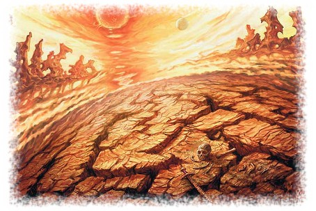

Roman içinde geçen bazı terimler Türk okuruna yabancı olduğu için bunları burada açıklama gereğini duyduk.
Abyss (Cehennem) - Dipsiz Kuyu, Sonsuz Uçurum. Kötülüğün hüküm sürdüğü kaotik bir alt boyut. Altı yüz altmış altı kattan oluştuğu tahmin edilmektedir, rivayete göre sonsuz sayıda kayıp katmanı da vardır. Her katman kendi içinde sonsuz genişliktedir. Her boyutun şekli ve coğrafyası değişik olabilir. Ancak Ansalon'da, ölümlüler arasında, her zaman yanan ölümün kol gezdiği kötü ruhlu kişilerin ölünce gideceği, ve sonsuz işkence çekeceği habis bir yer olarak tasvir edilir. (Açıklama: Anthelas)
